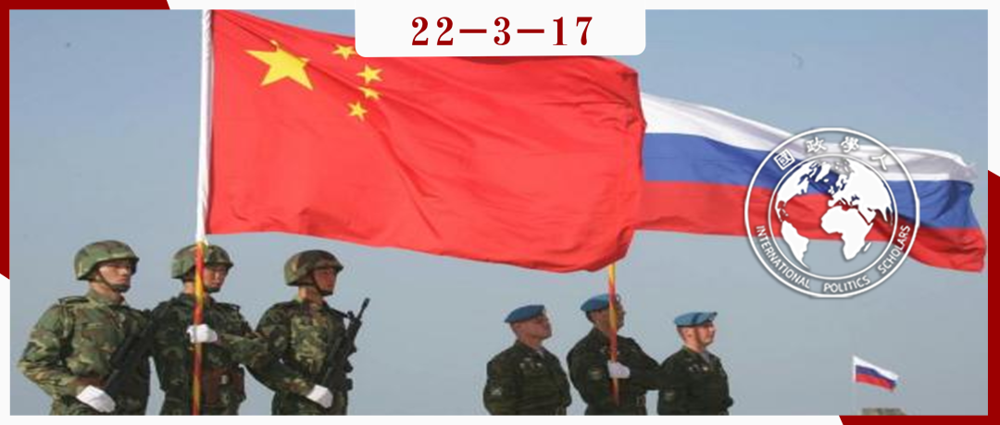

收录于合集

**
**
对中国崛起的反应： 俄罗斯与中国的军事伙伴关系
作者： Tom Røseth，挪威国防大学指挥与参谋学院助理教授。
编译： 罗洁（吉林大学行政学院国际政治专业）
来源： Røseth, T. (2019). Moscow’s Response to a rising China: Russia’s partnership policies in Its military relations with Beijing. Problems of Post-Communism , 66(4), 268-286.
DOI: 10.1080/10758216.2018.1438847

导读
近年来，中俄合作日益密切，两国已将双方关系定位为新时代全面战略协作伙伴关系，还引发了外界对两国是否会正式结盟的热烈讨论。然而，俄罗斯对中国崛起，以及中国在其远东和中亚地区影响力日益提升的担忧依然时隐时现，这种忧虑影响着俄罗斯的对华政策，也成为客观评估两国关系时不得不考虑的因素。本文聚焦于俄罗斯对华的伙伴关系政策，探究这种政策是实用型的延续，还是上升到了战略层次。文章首先建立起国家从非正式到正式的联盟类型，即从伙伴关系到正式结盟；再通过引入相互依赖理论中的脆弱性这一概念，指出允许脆弱性意味着信任的存在，使伙伴关系从实用型上升到战略型；最后通过三个案例分析——俄罗斯对华高科技军售，与中国演习时机密内容的增加以及作战知识与技术转让和沿共同边界的部署主要针对第三方，得出由于俄罗斯允许在与中国的合作中有不利于自身的脆弱性，所以俄罗斯对华的伙伴关系政策已从实用型转向战略型。与此同时，作者也注意到俄罗斯对中国的战略型伙伴关系政策也依然留有针对中国的防卫因素，显示出一种不完全一致的伙伴关系战略。
文章的主要贡献在于用脆弱性（尤其是不对称的）来区分实用型和战略型的伙伴关系政策，对军事政策这一国家安全中最敏感的领域的分析也加强了文章分类和结论的说服力。然而，文章依然存在以下问题：首先是理论部分国家结盟类型的光谱，作者没有将安全共同体（security community）这一带有规范特征的合作类型置于正式的结盟（alliance）之下作出具体阐释，这两个概念差异之大，使如此分类是否合理有待考证；其次是实际政策分析中的，正如文章中提到的，即使俄罗斯的对华政策中没有明显的制衡因素，俄罗斯依然会在深化与中国合作的同时，同步加深与其亚洲伙伴（如印度、越南）的合作来达到这一目的。这种间接制衡是否还意味着信任的存在？如果信任不足，仅靠脆弱性是否能够完全区分实用型和战略型的伙伴关系政策？毕竟脆弱性在国家合作的过程中难以避免。但无论如何，本文依然为认识俄中关系打开了新的视角，沿着本文抛出的问题和存在的不足，全面考虑俄罗斯在亚洲的对外政策，能够帮助我们抓住俄罗斯对华政策的实质。
编译
01
引入——中俄伙伴关系：实用型还是战略型？
2008年之前，俄罗斯不愿意深化与中国的军事合作，并对其人口不断减少的远东地区的军事和经济脆弱性表示担忧。这并非没有由来，两国有一段漫长而曲折的历史，直到20世纪80年代后半期才实现了正常化。然而，自2008年以来，俄罗斯对中国的可能威胁保持沉默，并转而加强国防和军事技术合作。俄罗斯于2017年7月4日向中国国家主席授予国家最高勋章，以表彰两国之间的全面战略协作伙伴关系，这成为俄罗斯政策变化的象征。
本文涉及一个明显的矛盾： 为什么俄罗斯要加强与崛起中的中国的军事合作，包括出售先进武器和提供敏感的作战知识信息，而这些可能会被中国用于在未来挑战俄罗斯？ 军事政策涉及敏感的国家安全利益，是俄罗斯最不愿意暴露的领域，也是评估俄罗斯如何应对中国崛起的试金石。在过去的二十年里，俄中关系有了很大的改善，高质量的军售和双边演习取代了频繁但谨慎的武器交易。在评估俄罗斯自2008年金融危机以来的对华军事政策时， 本文试图确定俄罗斯在军事领域对中国采取的伙伴关系类型是实用型（pragmatic）的还是战略型（strategic）的？
二者的区别至关重要： 实用的意味着与中国在国防和安全方面的接触是一种策略的（tactical）、机会主义的和基于威胁的；相比之下，战略的则是合作和基于信任的，并接受对中国的脆弱性，代表一种更正式的结盟。 已有文献关于俄罗斯如何看待中国的崛起和两国关系的水平存在差异。权威的俄中学者将两国关系描述为浅层次的和实用的关系，但同时承认两国关系的稳步改善。总的来说，2012年之后，西方学界承认了中俄双边关系的改善，并就如何评估结盟展开热烈的讨论。有学者已经将中俄视为一种战略伙伴关系，甚至已经发展成为一种协约关系（entente）——强于伙伴关系但弱于联盟；其他知名学者则更加强调双方合作的增加和双边关系的动态发展，而没有认为联盟出现。
本文根据2000年至2017年俄罗斯对外军事政策分析两国关系变化，数据来自俄罗斯的官方文件和声明、二手文献、新闻资料以及2015年在俄罗斯、圣彼得堡和海参崴进行的访谈。文章设定了判断伙伴关系是否具有战略意义的具体标准，并选取高科技军售、双边演习和在共同边境的单边部署和演习作为具有同等权重的实例。俄罗斯对华政策是实用还是战略，对中俄双边关系、亚洲的均势以及俄罗斯与西方的关系有着明显的不同影响。俄罗斯以前不愿意在中国面前吃亏，使双方关系止步于实用型，但本文的主要发现是， 战略政策是一步步推进的，基于高科技军售、双边演习的复杂性以及共同边境的部署主要针对其他威胁，到2016年俄罗斯对中国的伙伴关系政策已经成为战略型政策。 本文在阐述两国军事关系的改善上并不孤单，施瓦茨（Schwartz）根据他对技术转移和联合演习的评估，将2016年称为俄中防务关系的辉煌之年。到目前为止，两国在一些问题上的利益冲突以及俄罗斯对未来更强大的中国的担忧似乎是可控的。俄罗斯追求对中国的战略伙伴关系政策表明，俄罗斯正在提升双方关系，并愿意支持中国军事力量增长以筑牢中国在亚太地区的位置。作为回报，俄罗斯获得了东部边境的稳定、在国际问题上的合法性和支持，以及对抗西方在其周边地区施加影响的地缘政治空间。
本文首先概述了伙伴关系概念的分析框架，然后分析俄罗斯战略文件、学者和民意调查中表达的对中国的军事认知。在此基础上，文章通过上述三个实例来评估俄罗斯对华的军事政策和行动，以回答俄罗斯对华军事伙伴政策是转向了战略型，还是实用型的延续。
02
伙伴关系的概念
伙伴关系的概念是一种分析工具，既能体现基于现实的策略关系，又能体现容许大量脆弱性的合作关系。这种跨度是必要的，因为本文相信俄罗斯的对华政策超越了那些基于威胁的政策。 联盟理论（alliance theory）不太适用于俄罗斯的政策，因为俄罗斯和中国的目标是一种更非正式的结盟（informal type of alignment）。 因此，文章采用了伙伴关系而非联盟，并通过脆弱性的概念加以强化，因为这一概念允许多层次的分析方法（既包括系统的国家间层次，也包括中层的双边政策），并考虑到了基于信任的合作政策。图1描绘了理想化的国家合作类型（alignment types），其防御义务（defense obligation）从正式到非正式。伙伴关系相对而言是非正式的，联盟则是一种正式的合作。
图①：国家合作的主要类型（main types of alignments）（根据原图翻译）
由史密斯（Smith）确定的第一种是实用型伙伴关系（pragmatic partnership），主要基于权宜之计和策略计算，并限于感知的共同利益，零和的考虑占据上风。 这种关系出现于互相之间对相对能力的担忧，可以是暂时的，也可以是长期的，取决于各方的利益。因此，实用的伙伴关系是一种有安全机制的和平共处，管理伙伴关系的目的是防止安全局势的恶化。这也符合现实主义传统，在这一传统中，俄罗斯的对华政策被视为由第三方威胁驱动。在这种情况下，系统性的国家间关系优先，这与肯尼思·沃尔兹（Kenneth Waltz）的观点相呼应，即在对方意图不明确的情况下，为保护国家利益和自身安全而避免脆弱性——不增加自己对他国的依赖，也不提供可能增强对方相对实力的资源。 总之，实用型伙伴关系的一个明显特征是以威胁为导向，关注对方的相对实力和考虑到第三方的影响。
第二种是战略型伙伴关系（strategic partnership），是一种基于信任的广泛、长期的关系，允许妥协以通过伙伴关系获得收益，但也可能暗含着对对方相对权力的担忧。在这种情况下，本文引入了脆弱性的概念，以便更好地区别实用型和战略型。 史密斯认为，只有当对国际问题的总体性质、潜在和实际安全威胁以及应对这些威胁的最适当手段达成广泛共识时，伙伴关系才是战略型的。 在战略伙伴关系中，双赢的考虑在大多数双边问题上占主导地位。 这样的伙伴关系最有可能促进稳定和长期的承诺，使其能够超越实用型。 它并不完全安全，也不完全免受国家利益变化和对对方（错误）认知的影响，因为战略伙伴关系并不排除对伙伴相对实力的担忧，这也是俄中关系中反复出现的因素。史密斯认为，只要有一个能解决主要安全问题的平台和一个政治、外交和经济合作的双边框架，战略伙伴关系就能容忍这种焦虑。 本文把为了共同利益（common good）而容许脆弱性包括在内，延伸了史密斯的概念，以提高战略伙伴关系概念的可操作性。根据基欧汉和奈（Keohane and Nye）的观点，脆弱性意味着如果双边关系变成敌对，一方或双方都要付出代价，且不能轻易通过改变自己的政策来扭转。本文认为， 通过降低对对方权力的担心和共担风险，战略关系允许脆弱性的存在。
史密斯描述了第三种类型，即规范型伙伴关系（normative partnership），基于一套共同的行为规范（a common set of standards），各方认为自己是共享价值观的共同体的一部分，这在军事联盟中经常看到。然而，人们普遍认为，俄中之间存在文化隔阂，缺乏共同的价值观；此外，也没有发现俄罗斯对中国的军事政策中存在重要的规范性因素。因此，这种伙伴关系类型将被排除在分析之外。
文章用如下指标来衡量中俄伙伴关系的类型。俄罗斯的伙伴关系政策如果是实用的，应该符合以下标准：对中国不存在过多的脆弱性；战略文件、官方声明和民意调查应将中国视为一种挑战，或基于零和思维将中国的崛起视为一种可能威胁，即中国的收益等于俄罗斯的损失。在这种情况下，安全考虑限制了军事合作。在有关俄罗斯军事合作的三个案例中，实用的政策表现为不愿意增强中国的实力，俄罗斯在远东的单边军事部署将针对包括中国在内的潜在威胁。相反，如果俄罗斯对中国的军事政策含有战略因素，将允许风险和脆弱性的存在。战略文件、声明和民意调查将对中国进行正面描述或强调合作，允许出口高端武器和传授作战知识，以及沿共同边界的单边军事行动减少，因为双方都在寻求后方自由（their backs free），将精力放在第三方威胁。对称的脆弱性意味着平等的风险暴露，如非军事化边境地区；不对称的脆弱性是一方承担不平等的风险，例如俄罗斯远东地区在人口和与中国的常规战争方面都很脆弱。一个建设性的双边合作中存在基本的信任，使一方接受风险，相信对方不会利用自己的脆弱性；同时双方都能获益，尽管较弱一方可能获益较少。
总而言之，政策是否允许大量的脆弱性存在，是区分实用型与战略型伙伴关系政策的门槛。 文章将首先评估俄罗斯对中国的军事认知，以确定是否存在一个合作关系的认知框架，之后将仔细研究三个案例：军售、双边演习和共同边界的军事定位。
03
俄罗斯对中国的军事认知
本节将探索俄罗斯对中国的看法，以及这些看法是否与脆弱性和基于合作的伙伴关系相一致，这也是建立战略伙伴关系的前提条件。俄罗斯的战略文件、官方声明、国防专家的观点和民意调查以不同的方式展示了俄罗斯对华军事政策背后的意图或动机：战略文件默许了中国崛起可能带来的威胁，官方声明则往往认可东方的机遇，民意调查显示，随着时间的推移，俄罗斯人对中国的态度基本上是积极的。克里姆林宫有一个总体的政治目标，即加强与中国的关系，这是广泛军事合作的一个必要前提。
**
**
1. 俄罗斯更关注机会而不是中国的军事崛起
亚洲的增长和市场机会为俄罗斯提供了经济前景，尤其是能源领域，使俄罗斯开始认识到中国本身的重要性，而不仅仅是作为制衡西方的力量，这使得克里米亚危机后俄罗斯对华关系的改善具有持久性。 一种观点认为，双边关系的改善可能使俄罗斯相信中国是一个不太可能的对手，并欢迎中国的崛起。这让人想起罗伯特·杰维斯（Robert Jervis）的观点，即 当一个国家有足够的共同利益与他国结盟时，它实际上会欢迎对方力量的增强。 中俄共同的利益在于挑战西方的影响力，因此俄罗斯认为一个经济上强大的中国符合其利益，尤其是在与西方关系紧张加剧的时期。 尽管俄罗斯国内也意识到双方合作的不确定性，尤其是中国的军事支出远超自身，但俄罗斯还是愿意通过高科技军售和技术转让来增强中国的军事实力，这既是出于收益也是出于信任。
**
**
2. 民意对中国态度较为积极
俄罗斯的调查显示，公众对中国的看法是积极的，2017年的民调显示只有不超10%的人认为中国是经济或政治对手，5%的人认为中国是敌人。然而，两国关系仍然面临考验，其中有两个因素非常突出。首先是民意积极的原因可能在于俄罗斯的亚洲战略依然比较模糊，以及国家纽带要强于民间纽带，民众意见容易随国家关系的变化而变化。第二，俄罗斯远东地区由于缺乏投资和人口减少而较为脆弱，引发了俄罗斯对中国移民和资源占领的恐惧。然而，俄罗斯依然鼓励中国人到远东地区投资，尽管与此同时限制移民数量并与中国政府合作打击非法移民，但还是将经济合作作为解决脆弱性的手段之一。 安全关切和对中国投资的需求之间的矛盾，使俄罗斯在其远东地区表现出实用型和战略型的双重伙伴政策。
总而言之，尽管存在着一定的实用性，俄罗斯对华总体上已经转向了战略伙伴关系政策，这将在下文通过军事政策的前后对比进一步阐明。
04
中俄伙伴关系向战略型转型——基于三种军事指标的分析
1. 军售增强了中国的军事实力
**
**
这一部分将研究俄罗斯对脆弱性的接受程度，即中俄武器贸易的模式是否使俄罗斯更加脆弱，并显示出伙伴关系向战略型的转变。事实上，俄罗斯最近的对华军售突破了以往的限制。苏联解体之后，中国是仅次于印度的俄罗斯武器接收国，尽管数量很大，但俄罗斯对武器技术的转让十分谨慎，同时会向印度、越南等其他亚洲国家出口武器以推动亚洲势力均衡，防止中国获得额外的好处。例如，俄印武器贸易额是俄中的两倍以上，在2014年之前，印度是俄罗斯高端武器贸易的首选合作伙伴。但这在2010年至2016年期间发生了变化，俄罗斯在高端武器出口方面越来越倾向于中国，以前的不情愿变成了优先考虑，出口也从数量转向质量。到2015年，两国已经达成了4艘阿穆尔级柴油潜艇、24架多用途苏-35S战斗机和4套S-400地对空导弹防御系统的交易，这些武器已陆续交付。如果中国转而向俄罗斯部署苏-35S和S-400，将严重削弱俄罗斯在远东的空中行动力量。无论是为了加强双边关系，向美国发出信号，还是为了满足商业需求，基于这些贸易，本文认为 俄罗斯对华的军售政策在2015年真正转向了战略型，与中国合作的政治优先性压倒了安全考虑 。
2. 双边军事演习：从武器展示到作战知识的传授
**
**
自2012年以来，两国每年都举行双边海军演习，演习的内容也从俄罗斯先进武器的展示深化到两国战术和指挥控制程序的共享。从并行和编排的演习到复杂和针对现实情况的联合行动，越来越多的互操作性在2008年之前是看不到的。例如，2016年5月，两国举行了首次计算机辅助的导弹防御演习，在导弹发射预警系统和弹道导弹防御这样的敏感领域分享信息显示出了战略型伙伴关系。因为俄罗斯可能会在其中暴露自己在能力、行动和指挥方式上存在的漏洞；如果双方关系转为敌对，中国可以利用这些知识来对付俄罗斯。然而，正如美国前海军少将麦克·戴维特（Mike McDevitt）所指出的，两国的合作在涉及防空和反潜战时仍然有限；也有学者指出，相对于北约，两国联合演习的水平相当有限。 尽管如此，由于演习的复杂性和互操作性，到2016年俄罗斯的伙伴政策可以被定义为战略型的。 除此之外，演习中的政治色彩也在增加，俄罗斯从不愿意附加政治问题到后来同意在南海附近进行联合演习并发表声明支持中国的立场；作为回报，中国则与俄罗斯共同在波罗的海举行针对北约的演习，显示出各自对对方领土完整的支持。俄罗斯采用战略型的伙伴关系政策既整体改善了双边关系，又阻碍了美国的影响力。
3. 单边军事部署和演习：针对第三方国家？
这一部分考察俄罗斯是否沿两国边境进行针对中国的军事部署和演习，如果有，就会削弱前两个案例中的初步结论，因为这显示出了不信任，尤其是当演习显示出强烈的防卫和风险对冲时；相反，如果这种部署是有限的，并且符合商定的削减措施，将强化先前的结论。
首先，已有一系列条约限制了两国互相针对的军事部署。1997年4月的《边境地区武装力量相互削减协议》正式确定了缩减两国的边境武装力量，并安排了每年相互检查、监督和验证的互信措施，双方还用共同演习、年度高层互访和磋商，以及知识和技术的转让来弥补监督复杂性上的不足。在过去的二十年里，俄罗斯对其远东部队进行了巨大的削减。尽管中俄两国都对共同边境的部队有过重组和增强，但都是针对第三方（如俄罗斯针对美国及其千岛群岛利益，中国针对朝鲜局势），且双方都坚持上述建立信任的协议。但考虑到意图可能会被误解或迅速改变，因此军队部署存在二元性，事实显示出实用的伙伴关系政策，官方的说法则指向战略型。
其次是考察两国的单边演习，从理论上说，战略型伙伴关系的演习不应该再关注对方的大规模入侵。分析两国2009年至2015年部分演习发现，尽管主要是针对第三方，但也有将对方纳入其中的防卫因素。俄罗斯在演习中的实际部署和场景里的中国元素指向实用型的伙伴关系，也许是对崛起中国带来的不确定性的反应；另一方面，官方明确的针对第三方意图和边境的平静表明了接近战略型的政策。因此， 这一案例表明俄罗斯的政策并不连贯，同时包含了实用型和战略型。
05
结论
随着中国的崛起，俄罗斯看到了机遇和挑战，面对两国共同的对手美国，俄罗斯对中国的军事政策已经从为保护自己而避免暴露和脆弱，发展到接受风险和可能被中国利用的脆弱以获得共同利益。这一战略型伙伴关系政策是否经过深思熟虑，以及多大程度上是由事件驱动的，仍然是一个开放的问题。但俄罗斯也对中国在中亚等地影响力的增加感到担忧，军事部署中针对中国的防卫因素，显示出俄罗斯的战略型伙伴关系政策并不完全一致。
词汇整理
协约关系 Entente
防御义务 Defense obligation
俄罗斯联邦安全局 Federal Security Service (FSB)
互操作性 Interoperability
夺岛演习 Island-taking exercise ****
审校 | 聂涵琳 房宇馨
排版 | 苏伊文 张艺懿
文章观点不代表本平台观点，本平台评译分享的文章均出于专业学习之用, 不以任何盈利为目的，内容主要呈现对原文的介绍，原文内容请通过各高校购买的数据库自行下载。

国政学人
支持学术公益与知识传播
微信扫一扫赞赏作者 __赞赏
已喜欢，对作者说句悄悄话
取消 __
发送给作者
发送
最多40字，当前共字
上一页 1/3 下一页
长按二维码向我转账
支持学术公益与知识传播
受苹果公司新规定影响，微信 iOS 版的赞赏功能被关闭，可通过二维码转账支持公众号。